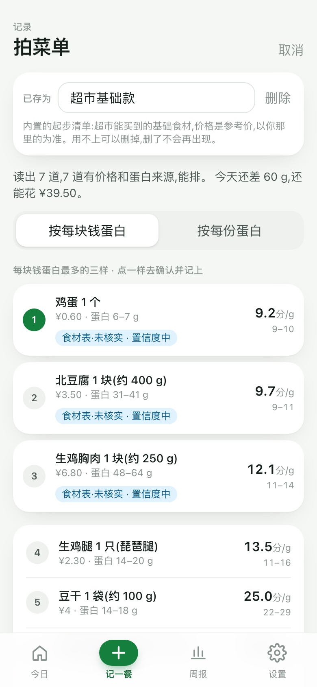

每个项目先说明目标用户、要解决的问题和衡量方式，再按统一的产品流程展开：背景、痛点、需求优先级、方案产出、开发上线、结果与迭代。所有数字均来自运行记录或公开数据核对。
途迹 Tuji Travel
已上线 · 开源
旅行行程变更工具 · 个人项目 · 2026.09 — 2026.11
先标必去、可选、可放弃，途迹排出行程并把预案算好；下雨、排队、有人累了，只改受影响的那一段，并把代价算给你看。无需注册，打开就能用。
给谁2–4 天去一座城市的自由行用户，行程排好之后最怕临时有变
解决什么行程出状况时怎么改：只动必要的那一段，改之前先看到代价
怎么衡量改动轮次（一次变更从想改到改完的操作次数，目标 ≤2）、放弃率、撤销次数
kaikungao.github.io/tuji-travel-planner · 北京 3 日示例

点击后在窗口内加载真实应用，选一座城市、点"开始规划"生成行程，砍点看代价、"出状况了"换点、预案页都能试。新窗口打开 ↗
271 / 271景点去不了时有替代或换天方案（9 城 27 份行程）
62 / 70含露天景点的行程日有雨天改法
2 步7 个改动入口中 6 个按设计 2 步内完成
标三档→排行程→备预案→只改一段→看代价
01 · 项目背景行程排好了，最怕的是要改。复盘做自由行攻略的过程并结合 OTA 行研发现：OTA 的 AI 助手和通用 AI 都在优化"一次排得准"，但用户排行程本来就要反复改，没有产品在降低"改一下"的成本。
02 · 痛点挖掘一句话产品承诺："行程改一下就好"。锁定痛点"排完不敢改"：花几小时排好的行程，遇到下雨、排队、同伴累了，只能全部重排或将就着走。北极星指标定为改动轮次 ≤2，并用放弃率、撤销次数作护栏。
03 · 需求与优先级6 项能力按依赖排成三周，各设闸门。三档意愿与代价量化 → 替代点与预案 → 行中重排与轮次埋点；同时做减法：AI 生成任意城市、多方案对比、预算等 5 项与"改得动"无关的功能不上线，城市只做有内置数据的 9 座。
04 · 方案产出给约束，不给预测。用户先标必去 / 可选 / 可放弃；下雨、去不了、排队太久、走不动四类预案各带方案和代价，必去只换天不替换；不报"13:47 到"，只报"最晚 14:59 进场"；每次改动只重算受影响的那一段，可撤销。
05 · 开发上线闸门是实测出来的。借助 Claude Code 开发并上线，代码开源；先用三城 68 个景点实测，发现"每个必去点配一个替代"不成立（颐和园、长城、熊猫基地没有合理替代），把闸门改为"替代或换天"且不得引入新的时间冲突，再扩到 9 城 198 个景点。
06 · 结果与迭代9 城 271 个景点，去不了时都有替代或换天方案。27 份行程实测；70 个含露天景点的行程日中 62 个有雨天改法，其余如实提示带伞或砍点；7 个改动入口中 6 个按设计 2 步内完成；已内置改动轮次统计，可导出每次变更的轮次、耗时与放弃率。
蛋白钱包 ProteinWallet
已上线
按预算选餐的 AI 工具 · 个人项目 · 2026.07 — 2026.08
填体重和每天的饭钱，常去的店拍一次菜单；之后每天打开首页，就能看到今天预算内、蛋白最划算的几样，点一下记上。给月生活费 2000–2500 元、想增肌的大学生，在有限的饭钱里吃够蛋白。
给谁月生活费 2000–2500 元、想增肌的在校大学生，三餐靠食堂、连锁和外卖
解决什么同一克蛋白在三餐里相差 10 倍，钱该花在哪顿饭上，下单前看不出来
怎么衡量每周记录天数（目标 ≥5 天）、首页清单的点选次数、周报一问"这周有没有因为它换过一次吃的"



点"在手机里试用"后，第一部手机内会加载真实应用，打开就是 13 张真实外卖订单解析出的示例：首页列出今天预算内的几样选择，点一样就记上；也可以到"拍菜单"里看存过的地方。新窗口打开 ↗
10 倍同一克蛋白在三餐里的价差：鸡蛋约 9 分/g，外卖约 100 分/g
13 / 13真实外卖订单截图，金额和菜名全部识别正确
18% → 6%这 13 单里 18% 的钱花在蛋白很少的菜上，只贡献 6% 的蛋白
填体重和饭钱→拍一次菜单→每天看清单→点一下记上→花超提醒
01 · 项目背景有限的饭钱里，怎么吃够蛋白。月生活费 2000–2500 元、想增肌的大学生，三餐靠食堂、连锁和外卖；蛋白粉一天一勺只补得上需求的两成，剩下的要从三餐来。蛋白钱包按每天的预算，给出吃得起、蛋白多的几样选择。
02 · 痛点挖掘同一克蛋白，在三餐里相差 10 倍。访谈 8 名国内高校健身房同学并检索小红书"穷鬼增肌"帖；整理价格表发现：鸡蛋约 9 分/g，食堂 25–50，外卖和快餐约 100。问题出在"哪顿饭"怎么选。
03 · 需求与优先级把操作成本排第一。对比薄荷健康、豆包：前者按条目搜索加克数或拍照记录，单位是千卡不是钱；后者每次都要重新问，不累计、不知道价格。于是菜单每家店只拍一次，日常一次点击；只给选择、不替用户决定。
04 · 方案产出用法四步。①填体重和每天饭钱；②常去的店拍一次菜单；③每天打开首页，看到今天预算内、蛋白最划算的几样，点一下记上；④花超不拦，但会提醒。内置的连锁菜品（麦当劳中国官方营养表 76 道）蛋白直接计入；其他菜第一次由 AI 读菜单算出蛋白，之后反复复用。
05 · 开发上线模型只读菜单，蛋白和排序由代码计算。撰写 PRD，借助 Claude Code 开发并上线，已埋点。模型读出菜名、价格和每道菜的蛋白来源，代码查食材表算出蛋白区间，再按每块钱换多少克蛋白排序；营养一律给区间并标明数据来源。
06 · 结果与迭代13 张真实外卖订单截图，金额和菜名全部识别正确。分析这 13 单发现，18% 的钱花在了蛋白很少的菜上（汤、寿司卷、洋葱圈这类），只贡献了 6% 的蛋白。这 13 单做成了首屏示例，第一次打开就能看到。
TripSplit 旅游分账 Agent
已上线 · 开源
多人自由行 AA 记账与核账工具 · 个人项目 · 2025.09 — 2025.12
一句话、一张支付截图或一段语音就能记一笔；账目由只读的核账 Agent 查重、查漏、查异常，修改建议逐条由用户确认；最后给出最少转账的结算方案。
给谁2–8 人结伴自由行里负责记账的"管账人"；钱是轮流垫的，记账的人和付钱的人常常不是同一个
解决什么消费记录分散、垫付关系复杂、参与人容易记错、结算前核对繁琐
怎么衡量录入自动入账率与字段准确率；核账查全率；结算前残留异常数；线上响应时长
tripsplit-jet.vercel.app · 示例账本核账结果

点击后在窗口内加载真实应用，自带一本埋了 5 处异常的示例账本：在「录入」写一句"阿强付的火锅 412，大家 AA"，再到「核账」点开始核账，看 Agent 如何引用证据并给出修改预览。新窗口打开 ↗
3 种录入文字 / 支付截图 / 语音，统一走置信度决策：自动入账或追问补全
5 / 5核账 Agent 找出示例账本全部埋设异常，每条结论引用具体证据
18 / 20录入评测集通过数；金额、付款人、参与人、分类字段准确率 100%
创建旅行→消费录入→账本管理→核账→结算
01 · 项目背景麻烦的不是最后怎么算，而是前面记不全、核不清。多人结伴自由行轮流垫付，消费散在群聊、支付截图和口头约定里；结算时反复出现记录凑不齐、垫付关系算错、参与人记错、核对要翻完整本账四类问题。
02 · 痛点挖掘把问题拆成三类成本：记录、核对、信任。记录成本用多模态录入降低，怎么方便怎么记；核对成本交给 Agent；信任成本靠边界解决：用户不敢让 AI 直接改账，所以 Agent 只读账目、只提建议，修改由用户确认。产品原则定为一句话：模型给判断、代码做算术、用户做决定。
03 · 需求与优先级先把一条动线跑通，再谈拓展。MVP 只保留"录入 → 账本 → 核账 → 结算"一条动线和多模态录入、历史检索、核账 Agent、最少转账 4 项能力；以单笔 ≤10 秒入账为目标设计文字、截图、语音 3 种录入；云同步、多币种、平台直连列为非目标后置。
04 · 方案产出逐字段给置信度，过线才自动入账。撰写完整 PRD，含 14 类异常处理与 19 条验收标准；录入由模型抽取金额、付款人、参与人并逐字段给置信度，金额过 0.8、付款人与参与人过 0.7 才自动入账，否则只追问缺失的那一项；检索把模糊描述解析成日期、金额、成员条件再按文本相似度排序；检索与核账的修改一律做成字段级前后对比，由用户确认。
05 · 开发上线Agent 在技术上就改不了账。核账 Agent 按"提示词封装 → Planning → 工具调用 → 结构化输出"搭建，只配 7 个只读工具，覆盖查重与 7 项规则体检，工具全是账本快照上的纯函数；AI 接口只返回建议，修改经用户确认后才写入。借助 Claude Code 开发并上线，代码开源。
06 · 结果与迭代录入评测 18 / 20，核账 Agent 稳定找出示例账本埋设的 5 / 5 处异常。录入评测字段准确率 100%，两例失败是"靠推断得到的付款人该不该追问"的标注边界；线上实测录入 4–6 秒、核账约 30 秒。第二期补齐云同步、请客与不均摊、多币种、预算、还款跟踪、批量导入、服务端语音、Agent 规则记忆，并建运营后台跟踪成功率、耗时与成本。